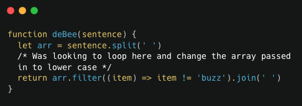
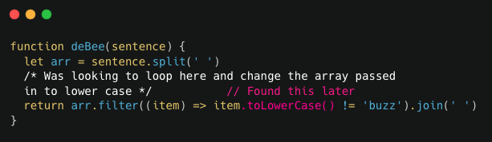
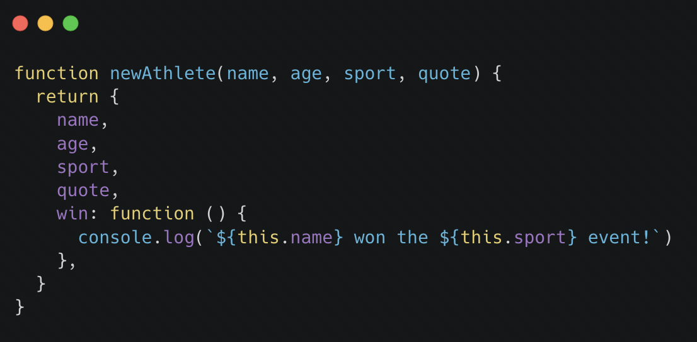

This blog should strengthen my understanding of my approach to problem-solving and what technique work for myself
What was the problem?
It was a task that was a function that took a string and returned that string with the word buzz removed. But the part that got me stuck was doing this regardless of the capitalization of the word. I knew about the .toLowerCase() function but was overcomplicating where to use it.
I initially thought I wanted to loop through the array before my filter method and turn everything lower case but that wouldn’t work unless I can return the string with the correct characters capitalized again. I was stuck on this idea of keeping track of what letters were capitals before an then correcting them again after removing the buzz. I knew this was overcomplicated already so didn’t go ahead and try it.
What problem-solving techniques did you use?
I went to the discord to help but accidentally used the rubber ducky method. In the handbook it says to explain what you were doing and what you expected. While I was tying out what my process was and describing the filter method I realised while typing “It passes in a word and then compares that to the string we want to remove” in that moment I realised that was where we can use the .toLowerCase() method as it wont change the initial string.
How did you feel throughout the process?
It wasn't frustrating but it was hard to shake my initial solution out. I felt tunnel visioned on an idea that wouldn’t really work, but because I wanted to change the string before passing it into the filter method I was looking only for solutions outside that area not on the line of code where the answer lay.
What did you learn?
Use the rubber ducky method and maybe to add a reverse pseudo code aswell. Typing comments explaining what each line does and maybe I can find where to inject the next piece of the puzzle.
What was the problem?
The problem was to make a function that created an object from the other parameters passed into the function. The function would do everything that we just did in the challenge in one step.
What problem-solving techniques did you use?
Pseudo code writing out the steps one at a time which helped me see how straight forward this process can be. Remembering a few syntax rules for objects the code was simple but also very functional.
How did you feel throughout the process?
Calm having used the pseudo code it was straight forward process but also having the solution make sense after I wrote the pseudo code made me understand how useful of a tool it is, diving head first into the coding can quickly over complicate just as the first challenge was for me
What did you learn?
The importance of pseudo code as mentioned above its strong tool that can help simplify tasks and layout the goals ahead. I also had a moment I wouldn’t describe as learning but having knowledge I forgot I had come to me when I needed it was quite a cool feeling hopefully through practise that can be something that happens more often. The more I pracitse now the easier little things will come back to me in the future.
Pseudocode
Getting better I use this most of the time although unless it was hard to understand more of the TDD tasks were kinda pseudo code so that helped. I need to work on writing pseudo code in a more english way I often write somewhat code in comments.
Trying something
I often run through things in my head. I need to just start trying something I think I decide if it’s a good idea or not prior to writing it so that needs some work as doing it may show my a new idea or a simpler way
Rubber ducky method
Going to start using this one more often. I hadn’t before but after it immediate success this and pseudo code will be my go to.
Reading error messages
Unless it says undefined I often don’t know what it saying I usually look for the error line and go from there. Going to need some work but being able to see what line is often help enough at the moment,
Console.logging
I use this all the time when Im working in arrays I at almost everystep use this to make sure I am thinking what I am passing through is what I think it is. It helps lift the veil from what the computer sees vs what we do.
Googling
So far it is often in search of how to use a method but being able to understand stack overflow and Docs is helping understand. I so far have avoided searching the question because I feel like google can just deliver the answer which would stop me from understanding
Asking your peers or coaches for help
This is always super effective, if its just another pair of eyes to spot a syntax error or getting send links to Docs a path to the soultion is provided with a high success rate
Improving your process with reflection
Reflecting has been a good thing to be doing but actively doing what you outlined as setbacks while having issues is a real skill I will continue to work on. Being able to acitvly think about a previous mistake while in the midst of the current one will need some practise.